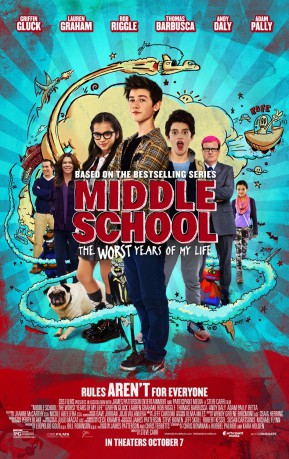
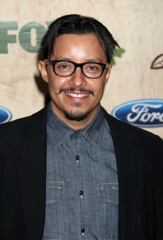
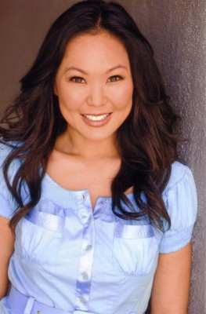

#7961 School Survival: Die schlimmsten Jahre meines Lebens
Alternativ: Middle School: The Worst Years of My Life
 
 IMDB-Wertung: 6.1 / 10
IMDB-Wertung: 6.1 / 10  Metascore: 0
Metascore: 0 
Imaginative quiet teenager Rafe Katchadorian is tired of his middle school's obsession with the rules at the expense of any and all creativity. Desperate to shake things up, Rafe and his best friends have come up with a plan: break every single rule in the school and let the students run wild.
Jahr: 2016
Dauer: 91 Minuten
FSK:
Land: USA Studio: CBS FilmsTonspuren: DD5.1 - ,
Untertitel: Deutsch,
Auflösung: 1080p (1920x800) Größe: 6963 MB
Genre: Komödie, Animation/Trick, Familie
Regisseur: Steve Carr
Drehbuch: Chris Bowman
Soundtrack: Jeff Cardoni
Darsteller:
- Griffin Gluck als Rafe
 Lauren Graham als Jules
Lauren Graham als Jules- Alexa Nisenson als Georgia
 Andrew Daly als Principal Dwight
Andrew Daly als Principal Dwight- Thomas Barbusca als Leo
 Retta als Ida Stricker
Retta als Ida Stricker Adam Pally als Mr. Teller
Adam Pally als Mr. Teller- Jessi Goei als Bella
- Jacob Hopkins als Miller
- Patrick Fagan als Boy Candidate
 Isabela Moner als Jeanne
Isabela Moner als Jeanne Isabella Amara als Heidi
Isabella Amara als Heidi- Madeleine Stack als Girl at Assembly #2
-  Efren Ramirez als Gus
 Rob Riggle als Bear
Rob Riggle als Bear- Gemma Forbes als Dana
-  Angela Oh als Superintendant Hwang
- Jeremy Culhane als Animation Voice
 Stephen Kearin als Animation Voice
Stephen Kearin als Animation Voice Tom Kenny als Animation Voice
Tom Kenny als Animation Voice Michael Rapaport als Animation Voice
Michael Rapaport als Animation Voice Jacob Vargas als Animation Voice
Jacob Vargas als Animation Voice- Storm Bell als Middle School Student (uncredited)
- Emma Dison Brantley als Homeroom Student (uncredited)
- Jake Buffenbarger als Student (uncredited)
- Alyssa Riley Burrell als Student (uncredited)
- Trey Carroll als Student- Catches Confetti (uncredited)
- Santana Draper als Middle School Student (uncredited)
- Montana Jacobowitz als Student (uncredited)
- Jonathan Kankolenski als Chef (uncredited)
- Nora Ordinario als Glee Club Singer (uncredited)
- Tabitha Ott als Student 1 (uncredited)
- Christian Riveron als Student (uncredited)
- Ricardo Riveron als Student (uncredited)
- Anna Swiney als Dave & Buster's Kid (uncredited)
- Luke Hardeman als Shon
- James A. Patterson als Restaurant Manager
- Carlos Lopez als Moving Guy
- Eston Andrew McLeroy als Student in Quad
- Mike Matzdorff als Animation Voice
- Anastasia Bastien als Student (uncredited)
- Jb Blaine als Dave and Busters Boy / Student (uncredited)
- Kris Bunch als Parent With Car (uncredited)
- Jesse Dillard als Student (uncredited)
- Hali Jones als Student (uncredited)
 Inder Kumar als Teacher (uncredited)
Inder Kumar als Teacher (uncredited)- Samantha Ott als Student (uncredited)
- Anna R. Parsons als Student (uncredited)
- Patti Schellhaas als Mom at Dave & Busters (uncredited)
Datei: X:\2016(N-Z)\School Survival Die schlimmsten Jahre meines Lebens (2016, FSK, 1920x800).mkv seit 09.01.2018
Festplatte: HD 2016(A-Z)
 Es gibt insgesamt 182 Filme in der Gruppe '2016(N-Z)'
Es gibt insgesamt 182 Filme in der Gruppe '2016(N-Z)'